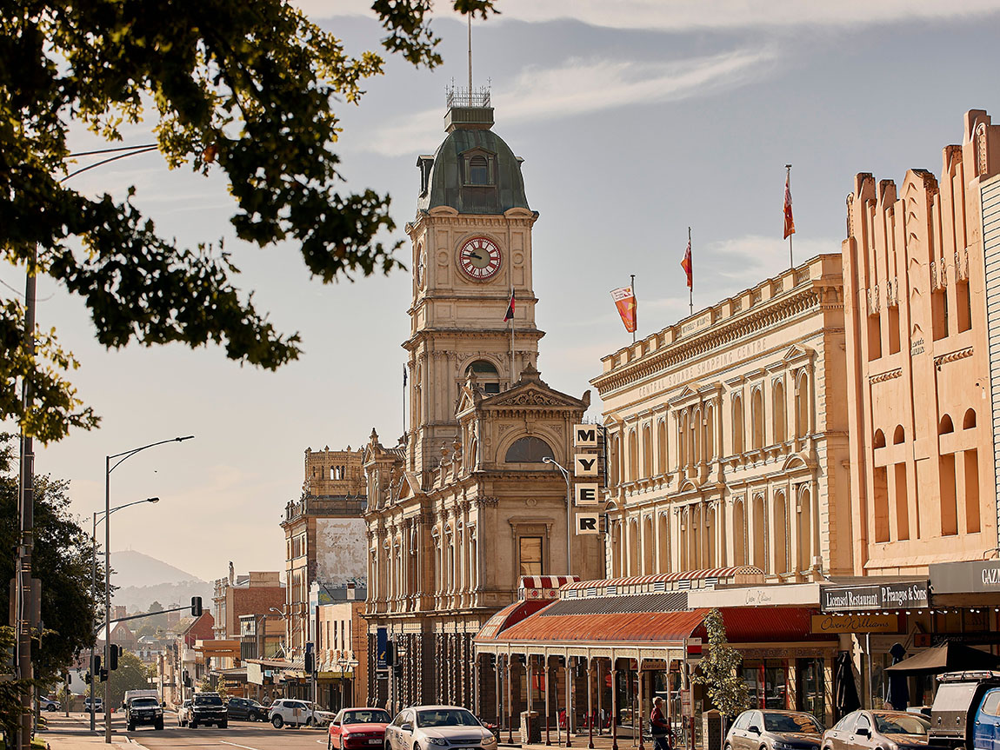

Ballarat
 ← Back to DestinationsWhat to See
Ballarat, located in Victoria, Australia, is a city rich in history and natural beauty. Known for its pivotal role during the Gold Rush era, Ballarat boasts a blend of historical landmarks, stunning gardens, vibrant arts, and bustling markets. Visitors can explore the renowned Sovereign Hill, enjoy the serene Lake Wendouree, and immerse themselves in the local culture through various festivals and exhibitions.
A Brief History of the City
Ballarat's history is deeply intertwined with the Australian Gold Rush of the 1850s. The discovery of gold transformed this small town into a bustling metropolis virtually overnight. Sovereign Hill, an open-air museum, meticulously recreates the gold rush era, allowing visitors to experience life as it was during those transformative years. Over the years, Ballarat has evolved while preserving its rich heritage, making it a fascinating destination for history enthusiasts and travelers alike.

Metal Detector Adventure
In true adventurous spirit, I decided to try my hand at gold mining in Ballarat by purchasing a metal detector. I ventured down to one of the old mining areas—although I didn’t strike gold, it was an incredibly fun and memorable day that connected me with the city’s rich Gold Rush heritage. Check out the video below for a glimpse of my metal detecting adventure!
Top 10 Attractions
- Sovereign Hill - An open-air museum that brings the Gold Rush era to life with reenactments, gold panning, and historical buildings.
- Lake Wendouree - A picturesque lake surrounded by beautiful parks, walking trails, and recreational activities.
- Ballarat Wildlife Park - Home to a diverse range of Australian wildlife, including kangaroos, koalas, and wombats.
- Art Gallery of Ballarat - Showcases an impressive collection of Australian and international art, including contemporary pieces.
- Ballarat Botanical Gardens - Featuring stunning floral displays, a conservatory, and peaceful walking paths.
- Ballarat Tramway Museum - Offers an interactive experience with vintage trams and guided tours of the historic tram routes.
- Old Ballarat Gaol - A historical prison museum that provides insights into the penal history of the region.
- Ballarat Ghost Tours - Explore the spooky side of Ballarat with guided ghost walks through its historic streets.
- Ballarat Farmers Market - A vibrant market offering fresh produce, artisanal goods, and local delicacies.
- Reid's Castle - A beautifully restored heritage home that offers tours and hosts events showcasing Victorian-era architecture.
What to Bring
- Comfortable walking shoes for exploring Ballarat's extensive attractions and walking trails.
- A lightweight jacket or sweater, as Ballarat's weather can vary, especially during the evenings.
- Sun protection: sunscreen, hats, and sunglasses to shield against Ballarat's sunny days.
- A reusable water bottle to stay hydrated during your adventures.
- Camera or smartphone for capturing Ballarat's picturesque landscapes and memorable moments.
- Guidebook or travel app to navigate the city's attractions and discover hidden gems.
- Portable charger for your electronic devices to keep them powered throughout the day.
- Umbrella or raincoat, as Ballarat experiences occasional rain, especially during the rainy season.
- Basic first-aid kit for minor health needs.
- Cash in Australian Dollars, as some establishments may prefer cash over cards.

Currency
Ballarat, like the rest of Australia, uses the Australian Dollar (AUD). While credit and debit cards are widely accepted in urban areas, it's advisable to carry some cash for smaller establishments, markets, and rural areas where card payments may be limited.
Best Time to Visit
The best time to visit Ballarat is during the spring (September to November) and autumn (March to May) months when the weather is mild and the city is adorned with beautiful floral displays and vibrant foliage. Summer (December to February) is ideal for enjoying outdoor activities and festivals, while winter (June to August) offers cooler temperatures and fewer tourists, making it perfect for exploring Ballarat's indoor attractions and historical sites.

Fun Facts
- Ballarat was one of the richest cities in the British Empire during the Gold Rush era.
- The city is home to the largest collection of Victorian glass in Australia at the Art Gallery of Ballarat.
- Ballarat was the birthplace of the Eureka Stockade, a significant event in Australian democracy.
- The Ballarat Botanical Gardens feature one of the oldest orchids in Australia.
- Ballarat has a vibrant arts scene, hosting numerous galleries, theaters, and annual festivals.
- The Ballarat Tramway Museum is the largest operating tramway museum in the Southern Hemisphere.
- Lake Wendouree was once the site of Australia's first army camp.
- Ballarat is twinned with the city of Buxtehude in Germany, fostering cultural exchanges.
- The Old Ballarat Gaol is one of Australia's oldest and most historic prisons, operational from 1857 to 1989.
- Ballarat hosts the annual Ballarat Heritage Festival, celebrating the city's rich history and culture.
Tips and Recommendations
Do’s and Don’ts
- Do: Explore Sovereign Hill to immerse yourself in the Gold Rush history with interactive exhibits and reenactments.
- Don’t: Litter or disturb public spaces. Ballarat prides itself on its cleanliness and preservation of historical sites.
- Do: Utilize the free Ballarat Visitor Information Centre for maps, guides, and local advice.
- Don’t: Rush through attractions. Allocate sufficient time to fully enjoy each site and experience the local culture.
- Do: Try local delicacies at the Ballarat Farmers Market and various eateries around the city.
- Don’t: Underestimate the weather. Check the forecast and dress accordingly, especially if planning outdoor activities.
Packing Lists
- Comfortable walking shoes or sneakers for extensive exploration.
- Lightweight, breathable clothing suitable for Ballarat's varied climate.
- Sun protection: sunscreen, hats, and sunglasses.
- Reusable water bottle to stay hydrated throughout the day.
- Camera or smartphone with ample storage for capturing memories.
- Portable charger for electronic devices to keep them powered.
- Umbrella or raincoat for unexpected showers.
- Basic first-aid kit for minor health needs.
- Guidebook or travel app for navigation and information.
- Cash in Australian Dollars for places that prefer cash payments.
Local Etiquette
Australian culture emphasizes friendliness, respect, and a laid-back attitude. Here are some local etiquette tips to enhance your visit to Ballarat:
- Always greet with a friendly "G'day" and a smile.
- Respect the local customs and traditions, especially when visiting historical sites and indigenous areas.
- When dining out, wait to be seated and follow the local dining etiquette.
- Dispose of trash properly and participate in keeping public spaces clean.
- Engage with locals respectfully and be open to learning about their culture and history.

What People Are Saying About Carl
"Exploring Ballarat with Carl was an incredible experience. His deep knowledge of the city and passion for travel made our trip truly memorable." - Emily (Australia)
Follow My Adventures
Stay connected and follow my journey through the links below: